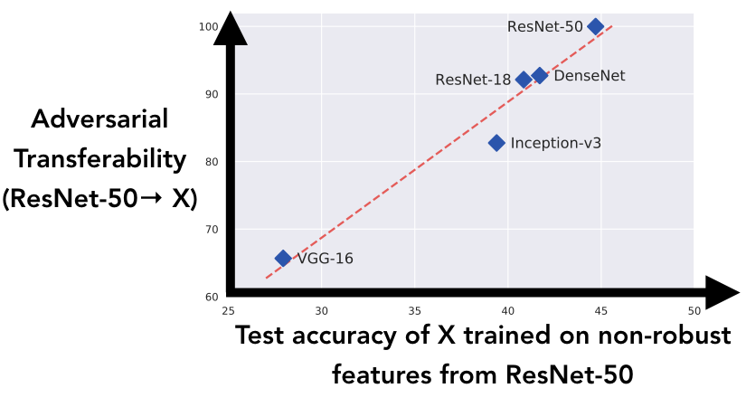
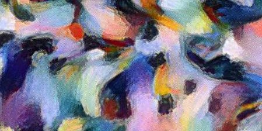
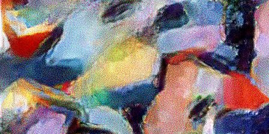
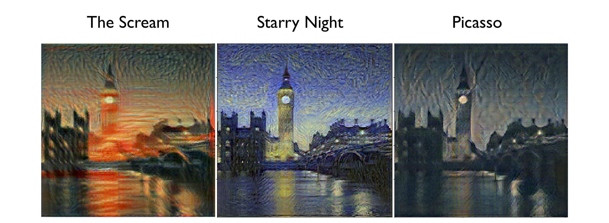
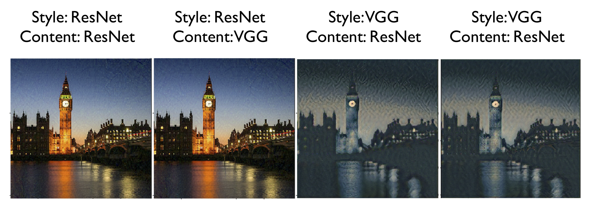

本文是关于 Ilyas 等人的论文《对抗样本不是漏洞，而是特征》系列讨论的一部分。您可以在关于《对抗样本不是 bug，而是 feature》的讨论中了解更多内容。
其他评论
Ilyas 等人的评论
Ilyas 等人的论文[(Ilyas et al., 2019)]中让我特别感兴趣的一幅图是下面这张，它显示了不同架构之间的对抗可迁移性与其学习相似非鲁棒特征的倾向之间存在相关性。

对这张图的一种解释是，它展示了特定架构捕捉图像中非鲁棒特征的能力强弱。 [1]
请注意 VGG[(Simonyan et al., 2014)] 与其他模型相比落后了多远。
在神经风格迁移[(Gatys et al., 2015)]这个看似无关的领域中，基于 VGG[(Simonyan et al., 2014)] 的神经网络也显得相当特殊，因为人们知道非 VGG 架构如果不采用某种参数化技巧[(Mordvintsev et al., 2018)]，效果通常不佳[2]。上面对图的解释为这一现象提供了另一种可能的解释。由于 VGG 捕捉非鲁棒特征的能力不如其他架构差，因此其风格迁移的输出对人类而言看起来反而更正确！ [3]
在继续之前，我们先快速讨论一下 Mordvintsev 等人在[(Mordvintsev et al., 2018)]中获得的结果。他们证明，通过使用先前在特征可视化[(Olah et al., 2017)]中确立的简单技术，非 VGG 架构也可以用于风格迁移。在他们的实验中，模型不是在 RGB 空间中优化输出图像，而是在傅里叶空间中进行优化，并在将图像输入神经网络之前对其施加一系列变换（例如抖动、旋转、缩放）。可微分图像参数化
我们能否将这一结果与我们将神经风格迁移和非鲁棒特征联系起来的假设调和起来呢？
一种可能的理论是，所有这些图像变换都会削弱甚至破坏非鲁棒特征。由于优化过程无法再可靠地通过操纵非鲁棒特征来降低损失，它就被迫转而使用鲁棒特征，而这些特征大概对所施加的图像变换具有更强的抵抗力（一个被旋转和抖动过的 floppy ear 看起来仍然像 floppy ear）。
一个快速实验
验证我们的假设相当直接：使用对抗鲁棒的分类器进行神经风格迁移[(Gatys et al., 2015)]，然后观察结果。
我评估了一个常规训练（非鲁棒）的 ResNet-50 和一个来自 Engstrom 等人的鲁棒训练的 ResNet-50[(Engstrom et al., 2019)]在神经风格迁移[(Gatys et al., 2015)]上的表现。为了进行对比，我还使用常规的 VGG-19[(Simonyan et al., 2014)]运行了相同的算法。
为了在不同网络具有不同最优超参数的情况下确保公平比较，我对每张图像进行了小规模的网格搜索，并手动为每个网络挑选了最佳输出。更多细节可阅读脚注[4]或查看附带的 Colaboratory 笔记本。
该实验的结果可以在下面的交互图中查看。
成功了！鲁棒 ResNet 相比常规 ResNet 表现出了显著的提升。请记住，我们所做的仅仅是更换了 ResNet 的权重，执行风格迁移的其余代码完全相同！
在 VGG-19 和鲁棒 ResNet 之间可以进行一个更有趣的比较。乍一看，鲁棒 ResNet 的输出似乎与 VGG-19 水平相当。然而，仔细观察会发现，ResNet 的输出似乎略微更噪，并且出现了一些伪影[5]。


VGG 和 ResNet 合成的纹理中伪影的对比。通过在图像上悬停进行交互。该图改编自
Deconvolution and Checkerboard Artifacts
作者为 Odena 等。
目前尚不清楚这些伪影的具体成因。一个理论是它们是由卷积层中核尺寸和步长不可被整除导致的棋盘伪影[(Odena et al., 2016)]。它们也可能是 ResNet 中最大池化层[(Henaff et al., 2016)]所导致的伪影。一个有趣的推论是，这些伪影虽然有问题，但似乎与对抗鲁棒性在神经风格迁移中所解决的问题是正交的。
VGG 依然是个谜
虽然这个实验最初源于对 VGG 网络特殊性的观察，但它并未为这一现象提供解释。确实，如果我们接受“对抗鲁棒性是 VGG 在神经风格迁移中开箱即用的原因”这一理论，那么我们应该能在现有文献中找到某种迹象，表明 VGG 天生比其他架构更具鲁棒性。
几篇论文[(Galloway et al., 2019; Hendrycks et al., 2019; Su et al., 2018)]确实表明 VGG 架构比 ResNet 略微更鲁棒一些。然而，它们也显示 AlexNet[(Krizhevsky et al., 2012)]——该网络并不以擅长神经风格迁移而闻名[6]——在这种“天然鲁棒性”上要优于 VGG。
或许对抗鲁棒性只是偶然地修复或掩盖了非 VGG 架构在风格迁移（或其他类似算法[7]）中失败的真正原因，即对抗鲁棒性是实现良好风格迁移的充分但非必要条件。无论原因是什么，我都认为对 VGG 的进一步研究是一个非常有趣的未来工作方向。
若要引用 Ilyas 等人的回复，请引用他们的
回复合集
回复摘要：非常有趣的结果，突出了非鲁棒特征的影响以及鲁棒模型在下游任务中的实用性。我们很高兴看到经过鲁棒训练的模型将在神经网络艺术中产生怎样的影响！我们也对风格迁移背景下 VGG 的神秘性[(Gatys et al., 2015)]深感好奇。因此，我们进行了更深入的探索，发现了鲁棒性与风格迁移之间的一些有趣联系，这表明鲁棒性可能确实在此过程中发挥了作用。
回复：这些实验真的很酷！有趣的是，即使没有明确的任务相关目标（即我们并没有训练网络使其更适合风格迁移），阻止模型依赖非鲁棒特征也能提升风格迁移的性能。
我们也觉得将 VGG 视为“神秘网络”的讨论非常有意思——从更一般的角度理解哪些因素驱动风格迁移性能将很有价值。虽然不是完整的答案，但在进一步研究中我们有几点观察：
风格迁移在 AlexNet 上也能工作：关于“鲁棒性是风格迁移的秘密成分”这一想法的一个潜在矛盾是，VGG 并非天然鲁棒性最强的网络——AlexNet 才是。然而，根据我们自己的测试，只要使用网络的前几层（与 VGG 的使用方式类似），风格迁移在 AlexNet 上似乎也能开箱即用：

观察到尽管风格迁移仍然有效，但出现了棋盘图案——这似乎与评论中在鲁棒模型背景下注意到的现象类似。这可能是另一个迹象，表明棋盘图案和风格迁移有效这两种现象并不像之前认为的那样紧密交织。
从预测鲁棒性到层鲁棒性：另一个潜在矛盾是，AlexNet 和 VGG 的鲁棒性其实并没有比 ResNet（在其上风格迁移完全失败）高多少，却似乎表现出戏剧性地更好的性能。为了解释这一点，请回想风格迁移是通过最小化由风格损失和内容损失组成的联合目标来实现的。然而我们发现，用于计算风格损失的网络远比用于内容损失的网络重要。下面的演示说明了这一点——我们实际上可以使用一个非鲁棒的 ResNet 来计算内容损失，一切仍然能正常工作：

因此，从现在开始，我们固定使用一个 ResNet-50 作为内容损失的对照，只关注风格损失。
现在请注意，风格损失的工作方式是使用相关网络的前几层。因此，或许重要的不是 VGG 预测的鲁棒性，而是我们实际用于风格迁移的那些层的鲁棒性？
为了检验这一假设，我们将第 l 层的鲁棒性 f 定义为：
本质上，这个量告诉我们在一个小的球内我们可以将该层的输出 f(x) 改变多少，并用图像之间一般表示的差异进行归一化。我们将几个不同网络前几层的该值绘制如下：

从这里可以清楚看到，VGG 和 AlexNet 的前几层实际上几乎和鲁棒 ResNet 的前几层一样鲁棒！这或许是一个更有说服力的迹象，表明鲁棒性可能确实与 VGG 在风格迁移中的成功有关。
最后，假设我们限制风格迁移在计算风格损失时只使用网络的单一一层[8]。同样，更鲁棒的层似乎确实在风格迁移上表现更好！由于鲁棒 ResNet 的所有层都是鲁棒的，即使只使用最后一层，风格迁移也能产生有意义的结果。相反，VGG 和 AlexNet 在较早的层（它们具有显著鲁棒性的层）表现出色，但在仅使用较晚的（非鲁棒）层时则会失败：
当然，这里还有大量工作要做，但我们很高兴看到未来有更多工作深入理解鲁棒性和 VGG 在基于网络的图像操纵中的作用。
您可以在
主要讨论文章